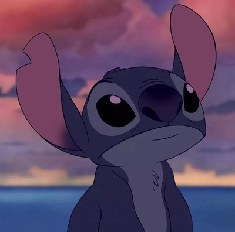
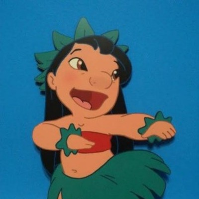
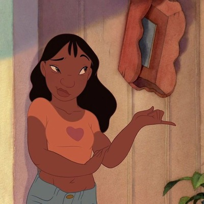

Members of the Ohana

Stitch (Element )
An alien prototype with a destructive instinct, created by the galaxy's genius scientist, Dr. Jumba. Originally, it has another hidden set of ears and limbs, and its trademarks are blue fur, large ears, and round eyes. At first, it was a troublemaker prone to destruction, but after meeting Lilo, a Hawaiian girl, it learns about love and kindness through the concept of "ohana" (family). It loves coffee and is crazy about strong things and music (especially Elvis Presley).

Lilo
An eccentric girl living in Kauai, Hawaii, whose trademarks are long black hair and a red hibiscus-patterned dress. A bit quirky and struggling to fit in with other children, she is exceptionally imaginative and deeply affectionate. With a unique sensibility—such as taking her own family portraits—she becomes Stitch's "ultimate best friend and big sister."

Nani
An elder sister whom Lilo can count on. Losing her parents at a young age, she takes care of Lilo all by herself as a parental figure. Although she is always busy with work, looking after Lilo, and dealing with social services, she has a strong sense of responsibility to love and protect Lilo with all her heart.